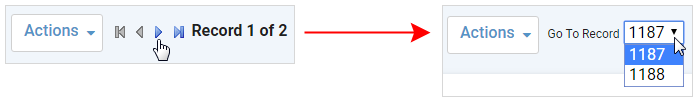
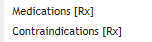

In the Administrator menu, click Layouts.
Click on a form name, then click New to create a custom version of the layout.
Clicking New will erase
the Selected Fields list. If you want to start your custom layout
with the same configuration as the current layout, choose Actions»Clone instead.
When cloning an existing layout, the Selected Actions will be copied to the cloned layout. When creating a new layout, the Selected Actions list in the editor will remain empty until actions are added. Actions prohibited from the user's role will remain unavailable.
On the Form tab, define general information about the form as well as managing the subsections and fields that will be on the form:
Enter the Code and Description for the form.
Enter the Tab name, which is used for the first tab label in display mode.
To include a workflow banner at the top of the form, select the Workflow (see Displaying Workflow Steps on a Layout).
To include a custom tab, select the UDF Form questionnaire that has been set up for that purpose and flagged as a UDF Form (see Creating a Custom Tab). The questionnaire will be associated to the layout but will only be displayed if UDF Form Display Mode = “Tab”
To show an icon beside the layout name when the user clicks New in a form, select the User Icon (from the UserIcon look-up table). The “Enable Layout Workflow” system setting must also be enabled.
- To hide the Layouts drop-down in display mode, select Hide Layout Selector. To exclude this layout from the drop-down, select Inactive.
- To make the fonts about 30% larger, select Larger Fonts. The change is roughly equivalent to increasing from 11pt to 15pt.
Normally child records are navigated via arrows at the top of the form; if you prefer that child records be selected via a drop-down, select the Toggle Related Forms as a Drop Down checkbox.

- To create a new subsection, enter the
Section Name (below the Selected Fields list) and click New
SubSection. To edit a subsection’s
properties, double-click the subsection header bar or click
 ; you can change
the following:
; you can change
the following: The Name of the subsection
Whether the subsection should appear Expanded by default
How many Columns the fields in the subsection should be arranged in
Optionally, set a condition that will control whether the subsection is visible or not; for example, the “Visit Details” subsection will be visible to the user unless the Department field on the main record equals “Management”, or the “Letters” subsection will be hidden from the user unless the “Completeness Score” on the main record is greater than 50. You can only create one condition per subsection/tab.
You can also set the condition of an employee or user field to “Is Me”; in this case the subsection will only be displayed when the field value equals the employee/user filling in the form.
This functionality is not available for Cority-created (default) layouts, or for the GDDLOFB subsection.
For information about including a GDDLOFB subsection, see Defining GDDLO Sections.
Drag fields, one at a time, from the Available Fields box to the desired subsection. You can then drag fields within the subsection to rearrange them as required.
Once a field is placed it is disabled (grayed out) in the Available Fields list. However, the Placeholder field (top-left corner of the Available Fields box) is never disabled -- it is used for alignment purposes or for entering custom text.
Any system-required fields (shown with a pink background) will already be included in the Selected Fields list and can be moved between subsections. They cannot be removed, but can be defined as Disabled in the field properties; these fields are enabled (and mandatory) when a user is creating a new record, and are then disabled after the record is saved, in effect creating a read-only layout.
To rearrange subsections, drag and drop the subsection header within the Selected Fields box. To delete a subsection, click the x in the top-right corner of the subsection header. A subsection cannot be deleted if it contains any required fields.
Click Save.
Configure the fields. Double-click on a selected field and define its properties:
Property Name | Non-modifiable used to identify the field by the application. |
Label | Field's label. This allows you to change the meaning of the particular field on the form. This is NOT a translation. If you rename the field, the new name will then appear in the form translation. Translation uses this label to translate this label for the field to other languages. Renaming a field on one layout will cascade to all other layouts for the same form. |
Label Alignment | The alignment for the field's label (Left/Center/Right) |
Tooltip | Optional; add a tooltip that will appear when a user hovers over the field. |
Column span | Number of columns the field will occupy (1 or 2). |
Row span | Number of rows the field will occupy. Default is 1. Depending on the field type, maximum is 1 for look-up fields and 10 for text fields. |
Required | Select if this is a required field. This checkbox is always selected (and disabled) for system-required fields. User-required fields are shown in the Selected Fields list with a yellow background. |
Disabled | Select to temporarily disable the field (preventing entry). This checkbox is always cleared (and disabled) for system-required fields. Disabled fields are shown in the Selected Fields list with a gray background. |
Disable Autofill | For non-picklist fields, select to prevent the browser from autofilling the field. For picklist fields, autofill is disabled by default and cannot be enabled. The browser will autofill First Name and Last Name regardless of their autofill setting. |
Hide Lookup Selector Icon | Select to hide the look-up selector icon that normally appears beside look-up fields. For example, you may not want users to be able to view the entire list of Employees. |
Enable Multiple Values | For picklist fields, will present each value with a checkbox and allow users to select multiple values. Notes
If you select both “Display values as radio buttons” and “Enable
Multiple Values”, the “Display values as radio buttons” setting
takes precedence. |
| Display Icon For Linking To Related Record | For fields associated with a table, will display a "Related Object" icon next to the field. Clicking the icon will take the user to the corresponding table (if they have appropriate permissions). |
Default value | The default value of the field. This depends on the type of field:
The default health center identified in a form’s layout will only be used if a user has not specified a Default Health Center in their system settings. Default field values may be superseded by values set in system settings or by workflow; for example, the name of the EHS person in an incident report is populated based on workflow criteria, regardless if a default value is defined in the form layout. |
Display values as radio buttons Number of columns when displaying values as radio buttons | Display the first 50 values of look-up fields as radio buttons (instead of having to select from a list) in the number of columns specified. |
You can include a user-defined field and change its properties to have its Source linked to any existing data table or look-up table. This is currently only available for custom Travel Clearance and Travel Destination layouts.
Use the Sections section to include any related forms, which are rendered as tabs after the main tab on the form. These forms may have already been defined with their own layout.
Drag an item from the Available Sections list to the Selected Sections list. To rearrange the order of selected items, drag and drop within the selected box.
To select the layout of the section, double-click the section. You can select New to create a new form layout for that section, or select an existing form layout. Click Close.
Click Save.
Alternatively, create a custom tab based on a questionnaire; see Creating a Custom Tab.
You may want to add a tab and action to allow users to link records; see Linking Records Across Clouds and Modules.
Use the Lists section to include any related lists, which are rendered as tabs after the main tab (and any related sections/form tabs) on the form.
A list can be configured to appear as a section on the main tab instead.
Drag an item from the Available Lists list to the Selected Lists list. To rearrange the order of selected items, drag and drop within the selected box.
Double-click a selected list to configure it:
The List will be the tab label (or the section label, if the list is grouped with another list).
If the list should be loaded when the main form loads, select Expand List (by default a related list is not loaded until its tab is clicked).
If multiple lists should be shown on the same tab, enter the same Group name in each list’s configuration. The Group name will be the tab label. Related lists with grouping will have the group name inside square brackets.

To expand the group to show which lists are in the group, select Expand Group. The lists themselves will not be expanded unless Expand List is also selectedIf you want the list to appear as a section on the main tab instead of as a separate tab, select the Main Form checkbox, and indicate if it should be included at the Bottom or Top of the main form.
Optionally, set a condition that will control whether the list is visible or not; for example, the “Visit Details” list will be visible to the user unless the Department field on the main record equals “Management”, or the “Letters” list will be hidden from the user unless the “Completeness Score” on the main record is greater than 50. You can only create one condition per list.
You can also set the condition of an employee or user field to “Is Me”; in this case the list will only be displayed when the field value equals the employee/user filling in the form.
This functionality is not available for Cority-created (default) layouts.Click Done.
Click Save.
In the Buttons section, select which buttons will be available on the form. The standard buttons (New, Save, Delete, Cancel) are selected by default.
Drag an item from the Available Buttons list to the Selected Buttons list. To rearrange the order of selected items, drag and drop within the selected box.
Click Save.
In the Actions section, select which actions will be available on the form.
Drag an item from the Available Actions list to the Selected Actions list. To rearrange the order of selected items, drag and drop within the selected box.
To create an action that will trigger a business rule, drag the New Action item from the Available Actions list to the Selected Actions list, then double-click on it to open the action properties. Enter a name for the action in the Button Label field, and select the Business Rule; only rules that match the layout entity will be available.
To present the action as a button instead of in the Actions menu of the form, double-click on the selected action and select the Display as Button check box; optionally change the Button Label. The button will display to the right of the standard layout buttons. You can add up to four action buttons to a custom layout.
Click Save.
Depending on business logic, some actions and buttons may be disabled.
In the Granted Roles section, select which user roles are allowed to access the form.